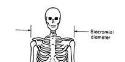

Descriptive statistics
Today we are going to work with summary statistics as a way to understand data. We have data on the following measurements for a collection of adults:
|
 |
As you know, the appropriate summary for a data set depends on the variable type (categorical or numeric). Further, for numeric variables the correct set of summary statistics to use depends on the shape of the distribution - symmetrical distributions can be summarized adequately by a mean and a standard deviation, but skewed distributions are better represented by medians (instead of means), and a more natural measure of dispersion for a median is the interquartile range (instead of a standard deviation). You also should know by now that you can detect skew by looking at histograms and at five number summaries. Histograms that are asymmetrical are skewed - if you locate the tallest bars to use as a central position, the tail of the histogram that is longest indicates the direction of the skew. For the five number summary, uneven spacing of the numbers on either side of the median indicates skew, and the numbers with the bigger spacing indicate the direction of the skew.
Even though all of the measurements we're working with are taken from the same set of people, they are not all the same variable type, and even for the numeric variables we can't assume they will all have the same shape of distribution - some may be symmetrical, others skewed.
Categorical variable
Calculate the frequency distribution for the Sex column. This is done by:
- Select Stat → Tables → Tally individual variables
- Put Sex in the Variables: list. Notice that all of the variables in the data set are listed on the left side of the window, because you are allowed to use either text or numeric variables here. But, we wouldn't want to count up frequencies of continuous numeric variables (do you remember why? Click here to see if you're right. ), so not all of the variables should be used, even if any of them could be.
- Put a check next to counts, and next to percents.
Percentages and relative frequencies are related, but they aren't the same thing. Relative frequencies are proportions (a part divided by the whole), and percentages are proportions multiplied by 100. When you record relative frequencies on your worksheet, report them as proportions.
Discrete numeric
The summary statistics that are appropriate for numerical variables depend on the shape of the distribution. For discrete data, we can assess shape with a frequency distribution.
To obtain a frequency distribution for the Age column, tally the Age variable as you did with the Sex variable, but this time just ask for counts (un-check Percents).
Look at the pattern of frequencies (in column Count) for the ages (in column Age). Answer the questions on the worksheet about these frequencies.
Continuous numeric
We will use histograms to diagnose the shapes of the numeric variables, and then we will pick summary statistics that are appropriate for each. We will use a histogram for Age as well, even though it is discrete, to facilitate comparison with Biacromial and BMI.
We should expect that men and women may have different distributions for all of these variables, so we should look at the shapes of the distributions for the sexes separately. Fortunately, we can get MINITAB to separate them easily.
1. Select Graph → Histogram. Use the default, Simple, and click OK.
In the Histogram: Simple window, select all of the numeric variables as Graph variables. Now, click on "Multiple Graphs". In the "Multiple Variables" tab, change "Show Graph Variables" to "In separate panels of the same graph"; this will put the histogram for each into the same graph window, which will make them easier to keep track of. Next, switch to the "By Variables" tab, and put Sex into the lower box ("By variables with groups on separate graphs"); this will cause MINITAB to make a different set of graphs for males and females.
Click OK for both windows, and you will see your graphs.
2. Calculate the five-number summary for Age and for Biacromial diameter. The five-number summary is minimum, first quartile, median, third quartile, and maximum. You can get these in Stat → Basic Statistics → Display Descriptive Statistics.
Put in Biacromial diameter and age as "Variables", and Sex as "By variables". Then, click on "Statistics..." and select just the five numbers we want (un-select everything else). Click OK to get your summary.
You can see that based on these numbers Biacromial diameter is fairly symmetrically distributed, but Age is not.
3. Calculate summary statistics, and report the ones that are most appropriate for each variable. For symmetrical distributions, report the mean and the standard deviation. For skewed distributions, report the median and the interquartile range.
Interpreting the standard deviation
You know from your lecture and from your reading before class that the standard deviation gives us information beyond a measure of the relative dispersion in the data. We can use the standard deviation to make predictions about the range of data values that should be found in the population we are studying. Use this table to answer the final questions in the worksheet.
|
Shape of the distribution of data |
||
|---|---|---|
|
Distance from the mean |
Bell-shaped |
Any shape (e.g. uniform, bimodal) |
|
1 SD |
68% |
No consistent value |
|
2 SD |
95% |
≥ 75% |
|
3 SD |
99% |
≥ 89% |
Challenge question
Starting this week there will be a challenge question at the end of each activity. These are optional, but they are taken from exams from previous semesters, and they will give you practice answering the kinds of questions you will see on the midterms and final. You are encouraged to use these to help you prepare for exams.
Numerical summary question
Radley studies a species of fly that occurs in both tropical areas (like the Amazonian rainforest) and in temperate areas (like San Diego). He suspects that flies that live in our dry region have better resistance to water loss compared with tropical populations that experience much higher humidities. To test this he weighs flies from each region, puts them in a chamber with very low humidity for 1 hour, and then weighs them again. The difference in beginning weight and ending weight is the amount of water lost by the flies.
The data on water loss is in this file. The “Location” column identifies the population the fly belongs to, and “Water loss” gives milligrams of water lost by each fly.
A. Make a histogram of water loss, and describe the shape (“Combined”). Then, make a separate histogram for each population (use the “With Groups” histogram type, ask me if you can't find it) and describe the shape for each population separately.
Combined: _________Temperate:_______ Tropical:_______
Why is the shape different when you combined the populations than when you make a separate graph for each?
B. Report the five-number summary for each group.
|
Location |
Minimum |
Q1 |
Median |
Q3 |
Maximum |
|---|---|---|---|---|---|
|
Temperate |
|
|
|
|
|
|
Tropical |
|
|
|
|
|
C. Does the five number summary agree with the shapes of the histograms for the two separate populations? In what way?
D. Are boxplots of these data sets symmetrical? Should they be, given your answers in A and B?
E. Report the frequencies and relative frequencies for each location.
|
Location |
Frequency |
RF |
|---|---|---|
|
Temperate |
|
|
|
Tropical |
|
|
|
Total |
|
|